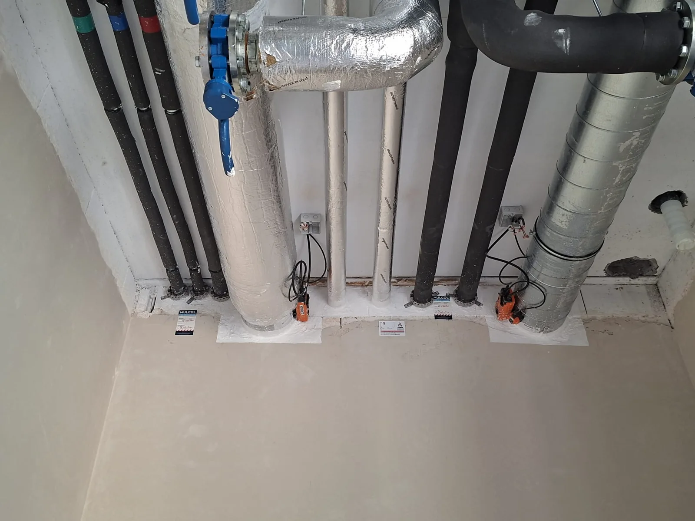

Specialisatie
Een gerichte focus op passieve brandbescherming, van afdichtingen tot bescherming van dragende structuren.
Over AB Firestop
Brandwerende dichtingen en compartimentering vragen om gerichte expertise. Dat is precies waar AB Firestop zich op toelegt.

Onze focus
Een leiding, een kabelbundel of een ventilatiekanaal maakt een gebouw bruikbaar. Waar deze technieken door een brandwand of -vloer gaan, is ook een correcte brandwerende afwerking nodig.
AB Firestop verbindt technische kennis met een zorgvuldige uitvoering. Wij werken met gecertificeerde systemen en stemmen de oplossing af op de constructie, de toepassing en de vereiste brandweerstand.
Bekijk onze zes expertisesWaar wij voor staan
Een gerichte focus op passieve brandbescherming, van afdichtingen tot bescherming van dragende structuren.
Efficiënte samenwerking met HVAC, elektriciteit en sanitair, met aandacht voor de uitvoeringsdetails.
Een correcte oplevering vraagt ook om heldere informatie over de gebruikte systemen en hun toepassing.
Korte communicatielijnen
Bespreek uw vraag rechtstreeks
met Andy of Ardit.
Eigen werfbeelden van AB Firestop.
Samen naar een correcte uitvoering